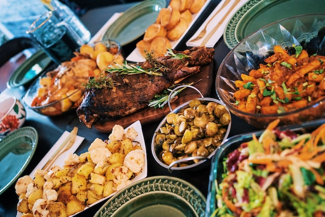

---
# Feel free to add content and custom Front Matter to this file.
# To modify the layout, see https://jekyllrb.com/docs/themes/#overriding-theme-defaults

layout: default
title: home
---
<div class="container">
    <div class="row">
        <div class="twelve columns">
            <div class="header">
                <h1>Todd's Bistro</h1>
                <p>A collection of easy-to-make recipes that are near and dear to my heart.</p>
            </div>
            <div class="card">
                
                <h1>Turkey Cubano</h1>
                <p>
                    Traditionalists would shoot me for the modifications I've made to the sandwich, but it still packs a lot of flavor.  
                    The quantity of ingredients is up to individual diner.  I typically lay on 4 slices of turkey, 2 of cheese, and enough 
                    pickles and mustard to stretch the length of the sandwich. 
                </p>
                <p class="title">Ingredients</p>
                <ul>
                   <li>Oven roasted turkey slices</li>
                   <li>Gruyere, Emmenthaler, or other swiss cheese, sliced</li>
                   <li>Yellow mustard</li>
                   <li>Bread and butter pickle chips or sweet relish</li>
                   <li>White or ciabatta sandwich rolls (or Cuban bread if you can nab it, of course)</li>
                </ul>
                <p class="title">Instructions</p>
                <ol>
                    <li>Preheat oven to 450</li>
                    <li>Spray a cookie sheet with PAM or grease with olive oil</li>
                    <li>Compile the sandwich per the recommendation above.  A nice balance is 4 slices of turkey, 2 slices of cheese,
                        mustard on one side of the roll, and relish or pickle chips stacked on the mustard</li>
                    <li>Place the sandwich on the cookie sheet.  Place a heavy, oven proof object (like a cast iron skillet) on the sandwich</li>
                    <li>Spray or oil the top of the sandwich</li>
                    <li>Bake for 10-12 minutes until the sandwich is warm, the cheese is melted, and the bread has formed a nice browned crust</li>
                </ol>
            </div>
            <div class="footer">
                <a href="https://unsplash.com/photos/nKs-oXRGGEg">Recipe placeholder photo by Rumman Amin</a>
            </div>
        </div>
    </div>
</div>